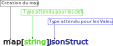

Sommaire:
- infos générales Journal de manip
- Description
- Composants Spécifiques
- Computer Vision
- Cookbook
- Culture Générale / Connaissances insolites
- DataBase
- Développement, Gestion et Commercialisation de projet
- Diagrams
- Docker
- Documentation_Automatique
- ESP8266 & ESP32
- Freecad
- GIT (versioning)
- Golang
- HPVC
- IDE & Text Editor
- Informatique
- Kicad
- LINUX
- MAC OS
- Machine Learning
- MQTT
- Musique
- Optimisation du travail (et de l’apprentissage)
- PowerShell
- PYTHON
- Regex
- Reseau
- Soudure
- Technos Web
- Trading
- URLtheque
- XML_JSON
- Arborescence du projet
Parsing Json¶
parsing json : unstructured json¶
Un json non structuré n’a pas forcément la même clé principale contrairement à un json structuré qui comprend toujours les mêmes clés. Il est donc important de pouvoir parcourir le json de façon dynamique.
Json Structuré¶
{ "name": "merlin", "age": 1000, "metiers": "enchanteur" }, { "name": "Arthur", "age": 20, "metier": "roi" }
Json Non structuré¶
{ "merlin": { "age": 1000, "metier": "enchanteur" }, "Arthur": { "age": 20, "metier": "roi" } }
Json Interne¶
Dans ce Snippet, les données json son fournies dirrectement dans le code au travers d’une variable interne.
On commence par importer les bibliothèques
Seule la bibliothèque « encoding/json » est nécéssaire. la bibliothèque « fmt » n’est utiliée que pour l’affichage.
package main import ( "encoding/json" "fmt" )On définit ensuite un struct qui sera utilisé pour la mise en forme des données extraites du json.
Puisque tous les éléments d’un struct doivent être publique, donc commencer par une Majuscule, il faut établir une correspondance entre les membres du struct et les clés du json.
Cette correspondence s’établie en ajoutant : json: »Nom_de_la_clef » à la suite de la déclaration du membre.
type JsonStruct struct { Path string `json:"path"` Exclude []string `json:"exclude"` }Json Data
Les données Json son fournie manuellement dans une variable.
// jsonData from a variable var jsonData = `{ "Dropbox": { "path": "/home/polter/Dropbox/WEB/atelier/project/_3_software/Atelier/", "exclude": ["node_modules/",".gitignore", "build/"] }, "Polux": { "path":"/home/polter/dev/Atelier/", "exclude": [] }, "Minux": { "path":"/home/polter/dev/Atelier/", "exclude": [] }, "Labux": { "path":"", "exclude": [] } }`Fonction “main”
Ici, tout le traitement s’effectue, par facilité, dans la fonction “main”. Les best practices étant au contraire de travailler le plus possible avec des fonctions et des modules pour que la fonction “main” soit le plus simple possible et effectue le moins possible de traitement direct.
func main() { // jsonData from a variableCréation d’un dictionnaire de struct (map[string]struct{})
« map » permet de créer un dictionnaire. C’est à dire de réunir un ensemble de données sous la forme Clefs / Valeurs.
Nous créons une variable « config » de type « map ». Ce « map » prendra des clefs de type « string » et des valeurs de type « JsonStruct ».
Cela signifie qu’une instance du struct « JsonStruct » sera créée pour chaque clefs ajoutées dans « config ». Dans notre exemple, les clefs seront les clefs primaires du Json (« Dropbox », « Polux », « Minux » et « Labux »)
// Creation of a 'map' (Dictionary) // Keys must be a type 'string' and values must be a type 'JsonStruct' var config map[string]JsonStructRemplissage de “config”
On parcour l’ensemble du fichier json. A Chaque nouvelle entrée dans le Json, on crée une instance de JsonStruct que l’on rempli avec les données associé à chaque clef primaire.
// Unmarshal the json data and send it to the adress (&) of of the map 'config' // The json Data must be provided as a slice of byte json.Unmarshal([]byte(jsonData), &config)Pour accéder aux dnée de config, peux le parcourrir avec une ou plusieur boucle “for”
for key, _ := range config { fmt.Println("\n/**********/") fmt.Println("key in 'config': ", key) // Check if a key is in the map struct if _, ok := config[key]; ok { fmt.Printf("\nAffichage du 'Path' de %v: %v\n", key, config[key].Path) if isNotEmpty := config[key].Exclude; len(isNotEmpty) != 0 { fmt.Println("\nParcours des elements exclus:") for _, exclude := range config[key].Exclude { fmt.Println(exclude) } } } } }
{kind=link}
Json Externe¶
Dans ce Snippet, les données json son fournies depuis un fichier externe. Le code est très similaire au précédent. La partie de traitement du json a été placée dans une fonction pour facilité la lecture.
On commence par importer les bibliothèques
La bibliothèque « encoding/json » permet de faire les traitement sur les données json.
La bibliothèque « fmt » est utiliée pour l’affichage d’information pour l’utilisateur.
La bibliothèque « log » est utilisée pour le traitement des erreurs.
La bibliothèque « os » est utilisée pour le traitement des fichiers.
package main import ( "encoding/json" "fmt" "io" "log" "os" )On définit ensuite un struct qui sera utilisé pour la mise en forme des données extraites du json.
Puisque tous les éléments d’un struct doivent être publique, donc commencer par une Majuscule, il faut établir une correspondance entre les membres du struct et les clés du json.
Cette correspondence s’établie en ajoutant : json: »Nom_de_la_clef » à la suite de la déclaration du membre.
type JsonStruct struct { Path string `json:"path"` Exclude []string `json:"exclude"` }Json Data
Le chemin du fichier json est donné dans la variable “fileName”.
var fileName string = "./computerPathList.json"Parcour du fichier json
La fonction “getJsonFile” prend en arguement une variable de type “string” cet arguement correspond au nom du fichier. Elle retourne un “slice” de type “byte”.
Cette fonction contrôle si le fichier existe puis le parcour et le copie en mémoire dans un tableau de “byte”.
// Function to parse the json file func getJsonFile(fileName string) []byte { // Json Data from an external file jsonFile, err := os.Open(fileName) if err != nil { log.Fatal("Error when opening file: ", err) }Le fichier “jsonFile” sera fermé automatiquement dès que le traitement de ce fichier sera terminé. Il s’agit d’une fermeture différée (command “defer”).
La bonne pratique est de placer le “defer” juste après l’ouverture du fichier pour être certain de ne pas l’oublier.
defer jsonFile.Close()On lit ensuite le fichier jusqu’à la fin et on retourne un “slice” de “byte” : “byteValue”.
N.b : Cette fonction de lecture de fichier peut consommer beaucoup de mémoire en cas de lecture d’un très gros fichier. Pour la lecture gros fichier, il peut être plus efficace d’utiliser des fonction de lecture avec un buffer (ex: “ReadAtLeast” ou “ReadFull”).
// Read the file until EOF. The return is a Slice of byte byteValue, err := io.ReadAll(jsonFile) if err != nil { log.Fatal("Error when reading Data: ", err) } return byteValue }Contrôle de l’éxistance d’une clef dans le “map” de “struct”
La fonction prend en arguement le “map” de “struct” de type “JsonStruct” et un “string” puis retourne un “boolean”.
L’argument de type « string » correspond au nom de la clef dont ont cherche à vérifier l’existance dans le struct.
// Function to check if a key is in the map struct func keyInMap(refMap map[string]JsonStruct, key string) bool { _, ok := refMap[key] if ok { return true } else { return false } }La
- func main() {
byteValue := getJsonFile(fileName)
// Creation of a “map” (Dictionary) of type “JsonStruct” var config map[string]JsonStruct // Unmarshal the json data and send it to the adress (&) of of the map “config” // The json Data must be provided as a slice of byte json.Unmarshal(byteValue, &config)
fmt.Printf(« Type of “config”: %Tn », config)
isPresent := keyInMap(config, « aaa ») fmt.Println(« isPresent: « , isPresent)
for key, _ := range config {
- if _, ok := config[key]; ok {
- if pathIsNotEmpty := config[key].Path; pathIsNotEmpty != « » {
fmt.Println( »n/******/ ») fmt.Println(« key in “config”: « , key) fmt.Printf( »nAffichage du “Path” de %v: %vn », key, config[key].Path)
}
- if excludeIsNotEmpty := config[key].Exclude; len(excludeIsNotEmpty) != 0 {
fmt.Println( »nParcours des elements exclus: ») for _, exclude := range config[key].Exclude {
fmt.Println(exclude)
}
}
}
}
}